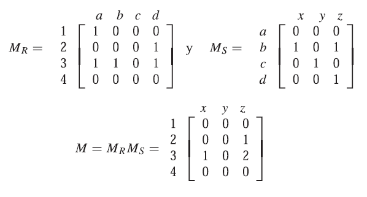
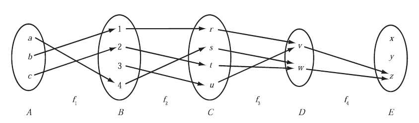

Teoria de conjuntos
Apuntes
Índice
- 1. Conjuntos
- 2. Subconjunto
- 3. Simbolos especiales
- 4. Conjuntos especiales
- 5. Relaciones entre conjuntos
- 6. Operacion es de conjuntos
- 7. Productos fundamentales
- 8. Grafo dirigido
- 9. Diagrama sagital
- 10. Matriz de relación
- 11. Composición de relaciones y matrices
- 12. Funciones uno a uno, sobre e invertibles
- 13. Relaciones sobre conjuntos
- 14. Relacion reflexiva
- 15. Relacion simétrica
- 16. Transitiva
1 Conjuntos
Un conjunto es una Colección bien definida de objetos, que se denominan elementos o miembros del conjunto. Usualmente las letras mayúsculas denotan a los conjuntos y las letras minúsculas denotan a los elementos del conjunto.
- \(a \in S\) denota que el elemento a pertenece al conjunto S.
- \(a \not \in S \) denota que el elemento NO pertenece al conjunto S.
2 Subconjunto
Se dice que A es un subconjunto de B si A está contenido en B o en otras palabras que B contiene a A. \( A \subseteq B \) o \( B \supseteq A \). Dos conjuntos son iguales si ambos tienen los mismos elementos o, equivalentemente, si cada uno está contenido en el otro.
A = B si y solo si \( A \subseteq B \) y \( B \subseteq A \)
3 Simbolos especiales
Los conjuntos numéricos usuales en matemáticas son:
- el conjunto de los números naturales \(\mathbb{N}\).
- números racionales \(\mathbb{Q}\).
- números enteros \(\mathbb{Z}\).
- números reales \(\mathbb{R}\).
- números complejos \(\mathbb{C}\).
La relacion entre estos grupos es la siguiente:
\[ \mathbb{N} \subset \mathbb{Z} \subset \mathbb{Q} \subset \mathbb{R} \subset \mathbb{C} \]
4 Conjuntos especiales
Algunos conjuntos tienen un nombre:
- Conjunto vacío o nulo \(\Phi\).
- Conjunto unitaio, es un conjunto con un solo elemento1.
- Conjunto Universal \(U\), es aquel conjunto fijo del cual se toma otros conjuntos, es decir, contiene todos los conjuntos que podemos mencionar en una materia.
5 Relaciones entre conjuntos
5.1 Iguales
Se dice que dos conjuntos son iguales si tienen exactamente los mismos elementos. Una forma práctica de establecer si dos conjuntos son iguales es determinar si se contienen el uno al otro
5.2 Equivalentes ≡
Dos conjuntos A y B son equivalentes o cordinales
6 Operacion es de conjuntos
Existen unas operaciones básicas que permiten manipular los conjuntos y sus elementos, similares a las operaciones aritméticas, constituyendo el álgebra de conjuntos:
6.1 Union
La unión de dos conjuntos A y B, es el conjunto de todos los elementos que pertenecen a A o a B, es decir:

Figura 1: \(A \cup B = \{x|x \in A~o~x \in B \}\)
6.2 Intersección
La intesección de dos conjuntos A y B, es el conjunto de todos los elementos que pertenecen tanto a A como a B, es decir:

Figura 2: \( A \cap B \{x|x \in A~y~x \in B \} \)
6.3 Complemento (Complemento Absoluto)
El complemento absoluto o simplemente complemento de un conjunto A es el conjunto de elementos que pertenecen a U pero no pertenencen a A:
Dado un conjunto A, su complementario es el conjunto formado por los elementos que no pertenecen a A.

Figura 3: \(A^C = \{ x | x \in U, x \not \in A \} \)
6.4 Diferencia de conjuntos (Complemento relativo)
La diferencia entre A y B también se denomina complemento relativo de B en A, y se denota \(C_AB\), cuando el segundo es un subconjunto del primero.
El complemento relativo de un conjunto B respecto de un un conjunto B o la diferencia de A y B, es el conjunto de elementos que pertenecen a A pero no pertenecen a B:

Figura 4: \(A \backslash B = \{ x | x \in A, x \not\in B \} \)
6.5 Diferencias simétrica
Dados dos conjuntos A y B, su diferencia simétrica, A Δ B, es un conjunto que contiene los elementos de A y los de B, excepto los que son comunes a ambos.
La diferencia simétrica de los conjuntos A y B consta de los elementos que pertenecen a A o a B pero no a ambos:

\(A \bigoplus B = (A \cup B) \backslash (A \cap B) \)
o
\(A \bigoplus B = (A \backslash B) \cup (B \backslash A) \)
7 Productos fundamentales

\[ \begin{matrix} P_1 = A \cap B \cap C & ~ & P_2 = A \cap B \cap C^C \\ P_3 = A \cap B^C \cap C & ~ & P_4 = A \cap B^C \cap C^C \\ P_5 = A^C \cap B \cap C & ~ & P_6 = A^C \cap B \cap C^C \\ P_7 = A^C \cap B^C \cap C^C & ~ & P_8 = A^C \cap B^C \cap C^C \\ \end{matrix} \]
8 Grafo dirigido
Para representar una relación R sobre un solo conjunto A.

\[ A = {1,2,3,4} \]
\[ \begin{aligned} R &= \{(1,2),(2,2), (2,4),(3,2),(3,4),(4,1),(4,3)\} \end{aligned} \]
9 Diagrama sagital

\[ \begin{aligned} A &= \{1,2,3\} \\ B &= \{x,y,z\} \\ R &= \{(1,y),(1,z),(3,y)\} \end{aligned} \]
10 Matriz de relación

11 Composición de relaciones y matrices
Hay otra forma para encontrar la composición de las relaciones R y S, y consiste en efectuar la multiplicación de sus respectivas matrices de relación

12 Funciones uno a uno, sobre e invertibles
- Función uno a uno (inyectiva): Si elementos diferentes del dominio A tienen imágenes distintas.
- Función sobre (suprayectiva): Si cada elemento de B es la imagen de algún elemento de A.
- Función invertible (biyectiva): Si y solo sí la función es uno a uno y sobre.

f1, es uno a uno, pero no es sobre.
f2, es uno a uno y sobre, por lo tanto es invertible.
f3, no es uno a uno pero sí es sobre.
f4, no es uno a uno y tampoco es sobre.
13 Relaciones sobre conjuntos
13.1 La relación L (menor qué)
para números reales define una relación de R a R como sigue: Para todos los números reales x y y:
\[xLy \leftrightarrow x < y\]
13.2 La relación E (de congruencia de modulo 2)
define una relación de 𝒁 a 𝒁 como sigue: Para todo \((m,n) \in Z \times Z\):
\[mEn \leftrightarrow m-n~es~par\]
13.3 La inversa de una relación de A a B
Entonces una relación R −1 de B a A puede definirse intercambiando los elementos de todos los pares ordenados de R.
\[R^{-1} = \{ (y,x) \in B \times A \vert (x,y) \in R \} \]
14 Relacion reflexiva
\(R\) es reflexiva si y sólo si para toda \(x \in A, x R x\) o en otras palabras: sí Cada elemento está relacionado consigo mismo.
15 Relacion simétrica
\(R\) es imetrica si y sólo si, para toda \(x, y \in A\) si \(xRy\) entonces \(yRx\), Si cualquier elemento está relacionado con cualquier otro elemento entonces, el segundo elemento está relacionado con el primero.
16 Transitiva
\(R\) es transitiva si y solo si, para toda \( x, y,z \in A \) si \(xRy\) y \(yRz\) entonces \(xRz\). Si cualquier elemento está relacionado con el segundo y el segundo elemento está relacionado con el tercero entonces, el primer elemento está relacionado con el tercero.
Nota al pie de página:
\( B={1,1} es unitario, se repite pero es uno \)